Przygotowanie do kursu
Cześć!Python to jeden z najbardziej popularnych języków programowania na świecie.
Nadaje się on do różnorodnych zastosowań, choć jako interpretowany język wysokiego poziomu do pewnego stopnia priorytetyzuje wygodę oraz prędkość pisania kodu ponad wydajność programów.
Dodatek - Języki interpretowane vs kompilowane
Zanim zaczniesz programować, musisz najpierw zainstalować wszystkie niezbędne narzędzia.Przede wszystkim potrzebujesz interpretera języka Python, aby uruchomić swój kod.
Jeśli jesteś ciekawy/a, co to interpreter, zajrzyj pod link powyżej.
Dodatkowo, aby napisać jakikolwiek bardziej złożony program, potrzebny ci będzie dowolny edytor tekstu lub IDE (Integrated Development Environment, czyli program, który zawiera w sobie wszystkie podstawowe narzędzia potrzebne programiście).Poniżej znajdziesz instrukcje instalacji oraz podstaw użytkowania Pythona w środowisku (IDE) Pycharm lub bez niego.
Jeśli nie masz żadnego doświadczenia z programowaniem i nie wiesz, czy używać IDE, czy nie, to najpierw spróbuj z nim - będzie ci łatwiej na początku.
Jeśli masz już zainstalowanego Pythona i własny zestaw narzędzi do edycji kodu - możesz pominąć tę lekcję.
Zwróć uwagę, że wszystkie te programy, włącznie z samym Pythonem, są wciąż rozwijane, więc pewne rzeczy mogły się zmienić od kiedy napisałem ten kurs.
Spis treści
Instalacja interpretera Python
Oficjalna strona z paczkami instalacyjnymi:
www.python.org/downloads/
Opisuję tu instalację w systemie Windows. Jeśli korzystasz z innego systemu, skorzystaj ze strony powyżej lub sklepu/menedżera pakietów wbudowanego w twój system (np. apt w Linuxach z rodziny Debian)
Z Microsoft Store
Możesz pobrać interpreter z Microsoft Store. Uruchom aplikację sklepu lub wejdź na jego stronę, wyszukaj "Python" i wybierz dowolną (ale lepiej jedną z najnowszych) wersję.Pythona 3.12, którego ja obecnie używam, znajdziesz pod adresem apps.microsoft.com/detail/9ncvdn91xzqp.
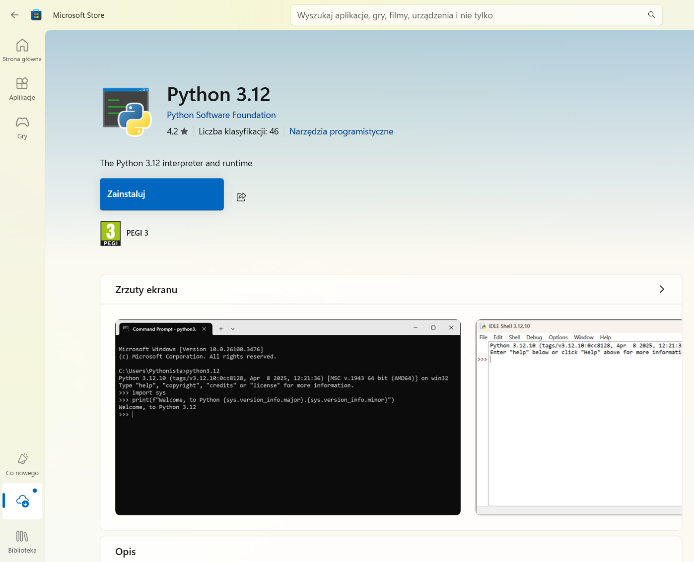
Następnie kliknij po prostu "Pobierz". Jeśli jesteś w przeglądarce, musisz jeszcze uruchomić pobrany plik.
W każdym razie system Windows przeprowadzi resztę instalacji automatycznie.
Ręcznie
Jeśli wolisz przeprowadzić instalację ręcznie, wejdź na oficjalną stronę z paczkami do pobrania (link u góry tej sekcji).Kliknij żółty przycisk pod napisem "Download the latest source release" aby pobrać najnowszą wersję.
Inne wersje są dostępne poniżej, ale możliwe, że będziesz się musiał/a trochę naszukać żeby znaleźć tam instalator.
Uruchom pobrany plik - powinno się otworzyć okno instalatora.
Upewnij się, że okienko "Add python.exe to PATH" jest zaznaczone, a następnie wybierz "Customize installation".
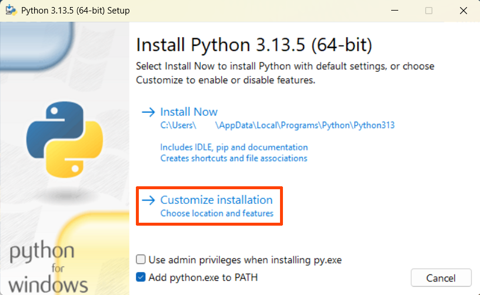
W kolejnym oknie po prostu kiliknij "Next".
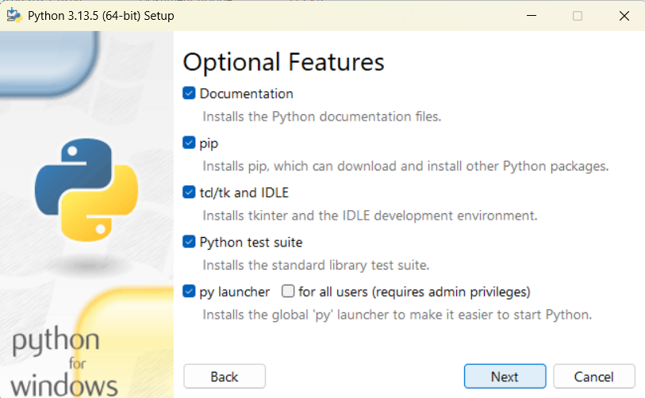
Natomiast w tym oknie zaznacz opcje:
- "Associate files with Python (requires the 'py' launcher)"
- "Create shortcuts for installed applications"
- "Add Python to environment variables"
- "Precompile standard library"
W okienku na dole możesz wybrać miejsce instalacji.
Kliknij teraz "Install", aby rozpocząć instalację.
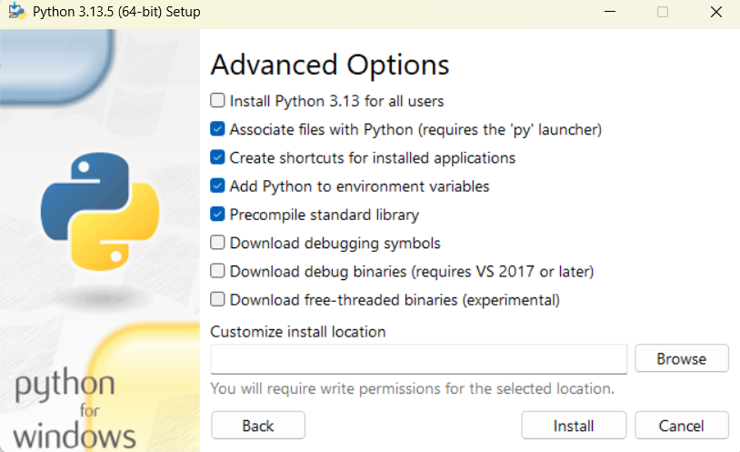
Po zakończeniu instalacji możesz już zamknąć okno.
Praca w środowisku Pycharm
IDE takie jak Pycharm to najwygodniejsza opcja jeśli chodzi o narzędzia do tworzenia kodu, oferująca wiele ułatwień.
Poza Pycharmem istnieją też inne opcje, które możesz wypróbować (jeśli instalowałeś/aś Pythona w systemie Windows, prawdopodobnie masz już też dołączone do niego, minimalistyczne środowisko IDLE).
Instalacja
Ponownie, opisuję instalację na systemie Windows, ale z tej samej strony możesz również pobrać Pycharm na inne systemy.Wejdź na stronę www.jetbrains.com/pycharm/download/" i kliknij na przycisk "Download" (ten poniżej, nie w nagłówku strony).
Uruchom pobrany plik instalatora. Prawdopodobnie będziesz musiał/a zezwolić na użycie uprawnień administratora.
W pierwszym oknie kliknij "Next"; następnie wybierz miejsce instalacji; "Next" i zaznacz wszystkie opcje (może poza "Create Dektop Shortcut", jeśli nie chcesz skrótu na pulpicie)
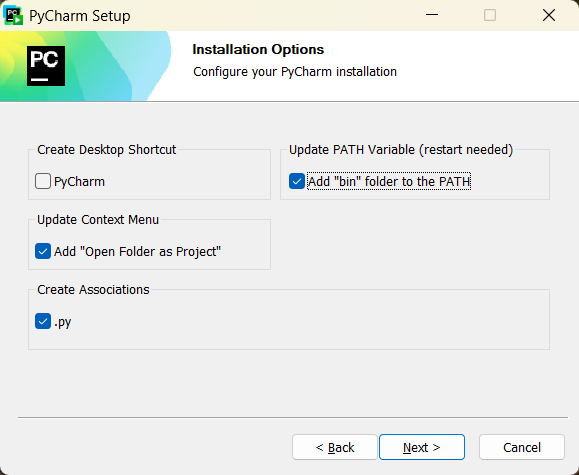
"Next", folder Start Menu możesz zostawić domyślny. No i na koniec "Install".
Po zakończeniu instalacji konieczny będzie restart komputera.
Upewnij się, że masz wszystko zapisane, zaznacz "Reboot now" i kliknij "Finish".
Twój komputer zostanie zrestartowany, po czym będziesz już mógł/mogła uruchomić Pycharm.
Używanie
Uwaga: przedstawiam tu tylko kilka podstawowych funkcji, które oferuje środowisko Pycharm. Ja sam nie używam go na co dzień, więc nie znam wielu z jego funkcji.
Przy pierwszym uruchomieniu, Pycharm zapewne zapyta się o wersję "pro". Po prostu zamknij okno, które wyskoczy lub wybierz, że zostajesz przy darmowej wersji i pozwól mu zrestartować program w wersji darmowej.
Zobaczysz zapewne (mniej więcej) taki ekran startowy:
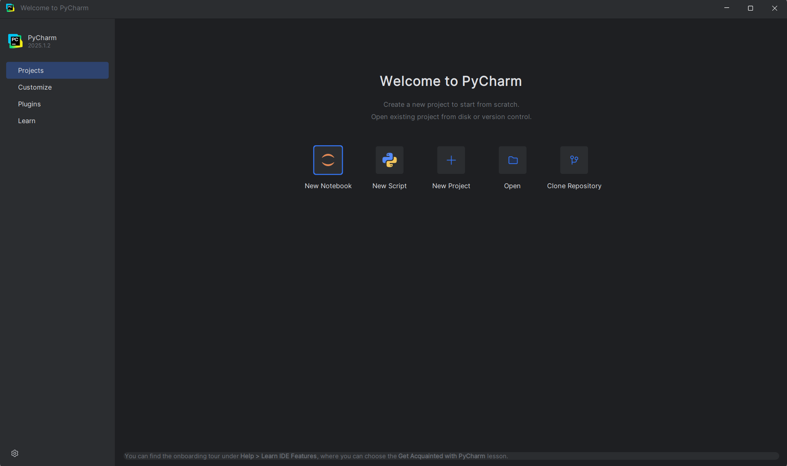
Wybierz "New project".
Otworzy się okno tworzenia nowego projektu.
W pasku u góry możesz wybrać lokalizację, w której będą przechowywane pliki tego projektu (albo po prostu zostaw domyślną).
Upewnij się, że w panelu po lewej wybrana jest opcja "Pure Python", a następnie w opcji "Interpreter type" zaznacz "Custom environment".
W menu, które się pojawi, zaznacz:
Environment: Select existing
Type: Python
Następnie kliknij "Create".
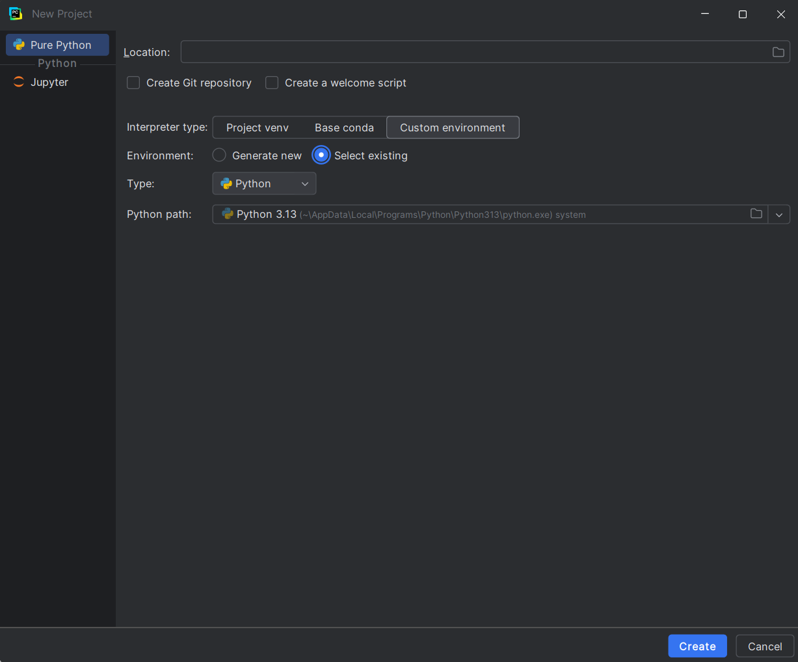
To nieco bardziej zaawansowana kwestia, ale jeśli jesteś ciekawy/a, to wyjaśniam, co właśnie zrobiliśmy, tutaj.
Otworzy się pusty projekt.
W centrum ekranu znajdują się 2 główne panele - drzewo plików po lewej, oraz panel, w którym widać zawartość otwartych plików, po prawej.
Na samym skraju okna po lewej jest również wąski pasek narzędzi, w którym możesz schować albo zmodyfikować lewy panel, a także otworzyć trzeci panel u dołu ekranu.
Jak na razie w plikach powinieneś/aś widzieć pusty folder o nazwie twojego projektu, (jeśli nie zmieniałeś/aś lokalizacji projektu jest to zapewne coś w rodzaju "PythonProject") folder "External Libraries" oraz "Scratches and Consoles".
Dwa ostatnie możesz na tę chwilę zupełnie zignorować.
Jesteś ciekawy/a czym są? (naciśnij aby rozwinąć)
"External Libraries" to folder, w którym zawierają się pliki twojej instalacji Pythona
(w tym ewentualne dodatkowe biblioteki, gdybyś miał/a jakieś zainstalowane).
Możesz tam znaleźć między innymi kod programistyczny, który tworzy sam język Python
(choć ostrzegam, nawet mi jest trudno się w nim połapać. Możesz tam zajrzeć w ramach ciekawostki,
ale w rzeczywistości bardzo trudno czegokolwiek się w ten sposób dowiedzieć).
Folder "Scratches and Consoles" służy do tworzenia plików i notatek, które nie są "przywiązane" do projektu,
w którym obecnie pracujesz, i do których można się dostać również z poziomu innych projektów.
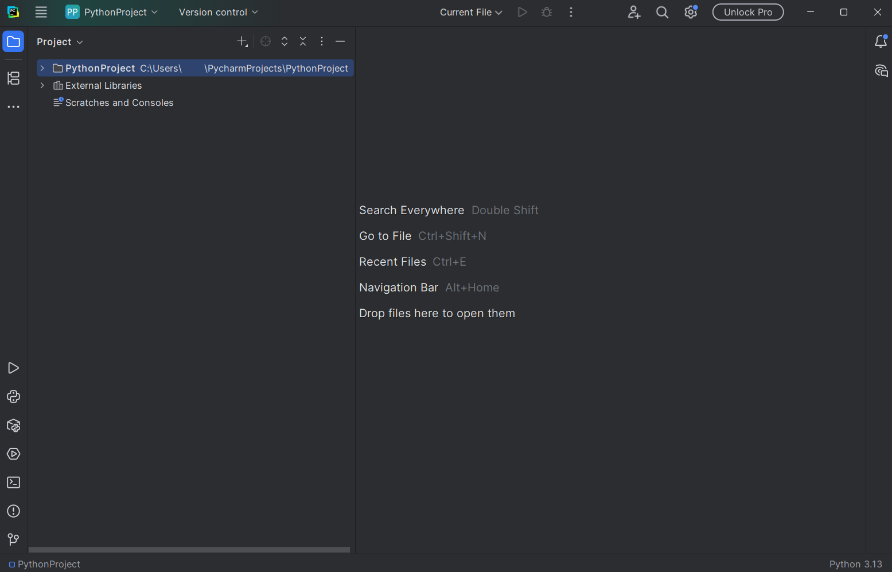
Kliknij teraz prawym przyciskiem myszy na folder twojego projektu.
Powinno otworzyć się menu kontekstowe. Najedź na opcję "New" u jego szczytu i wybierz "Python File".
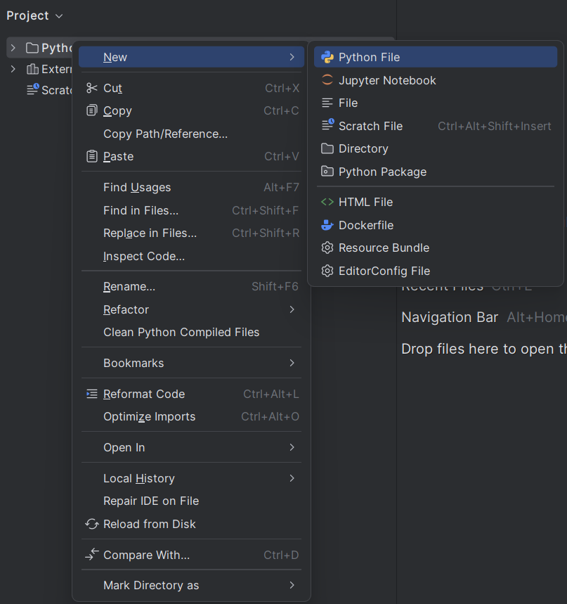
W okienku, które wyskoczy, wpisz nazwę swojego pierwszego programu - zgodnie z programistyczną tradycją, proponuję, żeby było to "Hello.py".
'.py' jest rozszerzeniem nazwy pliku, które informuje użytkownika oraz system, że plik zawiera kod napisany w języku Python.
Stworzyłeś/aś właśnie swój pierwszy plik z kodem.W panelu z drzewem plików powinien być teraz widoczny plik z wybraną nazwą i symbolem Pythona (jeśli go nie widzisz, kliknij na folder prejktu, aby otworzyć jego zawartość).
Natomiast w panelu po prawej otwarło się teraz okno edycji pliku.
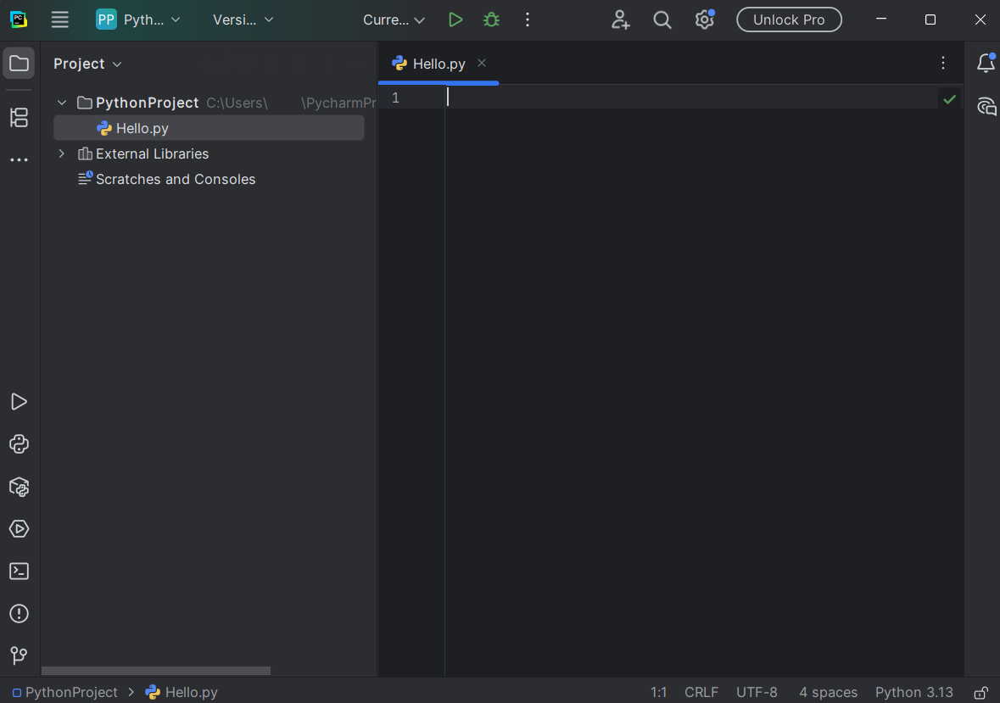
Napisz teraz swój pierwszy program (również zgodnie z programistyczną tradycją).
Przepisz (lub lepiej, przekopiuj) po prostu kod poniżej do okna edycji pliku:
print("Hello World!")
Kiedy skończysz, kliknij na zielony trójkąt ponad panelem edycji pliku, aby uruchomić swój program.Automatycznie wyskoczy dolny panel z wynikami działania programu.
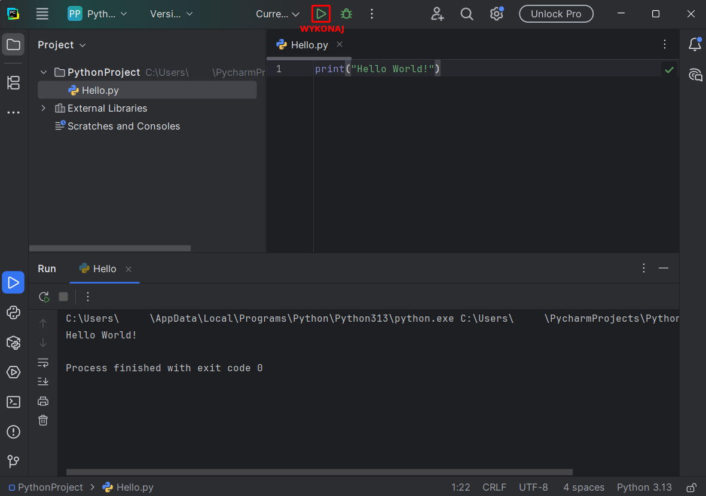
Przeanalizujmy dokładniej, co zawierają:
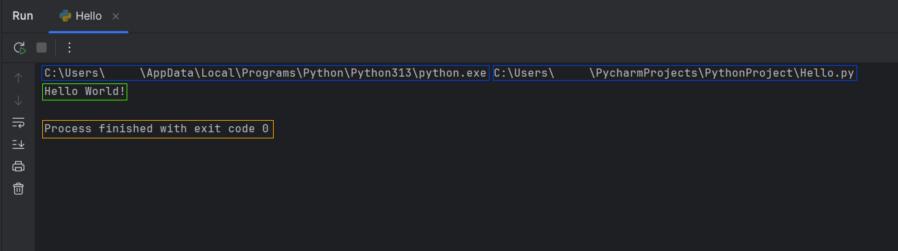
Dwa napisy zaznaczone na niebiesko to polecenie, które Pycharm wykonał w powłoce systemowej (terminalu), aby uruchomić twój program.
Odpowiadają one lokalizacji dwóch programów, które zostały uruchomione - pierwszego, interpretera Pythona, oraz drugiego, twojego (uruchomionego już *przez* Pythona).
Napis w zielonej ramce to informacja, którą wypisał twój program - to właśnie robi polecenie `print()`, którego użyliśmy.
Spróbuj zmienić napis w cudysłowie wewnątrz tego polecenia i uruchom program ponownie, a zobaczysz, że napis w wynikach również się zmieni.
Napis zaznaczony na pomarańczowo to informacja o zakończeniu działania programu. W tym wypadku program zakończył działanie i automatycznie wysłał do systemu informację zwrotną w postaci liczby 0 - tak właśnie powinno być.
Co prawda liczba, którą zwraca program może być zmieniona wedle woli programisty, ale przyjęło się, że liczba 0 oznacza pomyślne zakończenie działania programu, natomiast każda inna oznacza, że program zakończył działanie w wyniku jakiegoś błędu.
Przyjrzyjmy się teraz paskowi narzędziowemu po lewej: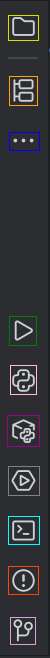
Po kolei od góry do dołu:
- Panel z drzewem plików
- Panel struktury kodu - przydatny przy nawigowaniu w kodzie bardziej skomplikowanych programów, w przypadku Hello.py raczej nic tam nie zobaczysz.
- Dodatkowe panele - można tam znaleźć sporo dodatkowych funkcji, ale trudno, żeby opisywał wszystkie.
- Wyniki uruchomienia programu
- Konsola interpretera - możesz tu wykonywać Pythonowy kod bez tworzenia pliku - spróbuj przekopiować tu linijkę kodu z Hello.py i kliknąć Enter a by wykonać.
- Dodatkowe paczki - można tu przejrzeć zainstalowane dodatkowe "narzędzia", ale na razie nie będziemy z nich korzystać.
- Usługi - to zaawansowana funkcja Pycharm, która pozwala na połączenie dodatkowych funkcji ze swoim IDE.
- Terminal - tudzież powłoka systemowa - to poprzez nią tak naprawdę odbywa się uruchomienie twojego programu. Jeśli przekopiujesz tutaj linijkę, którą zaznaczyłem na niebiesko w wynikach Hello.py, uruchomisz go "ręcznie", bez pośrednictwa Pycharma.
- Błędy - znajdziesz tu listę błędów w kodzie, które automatycznie wykryło IDE.
- Kontrola wersji - służy do wersjonowania kodu, nie przyda ci się dopóki nie zabierzesz się za jakiś duży, długoterminowy projekt.
Ostatnią ważną rzeczą jest pasek z narzędziami ukryty pod przyciskiem z poziomymi paskami w lewym górnym rogu.
Po jego kliknięciu pojawi się cały szereg zakładek z wieloma opcjami, ale najistotniejsze z nich znajdują się w zakładce "File".
- New project - pozwala stworzyć nowy projekt
- New File or Directory - inny sposób na stworzenie nowego pliku lub folderu
- Close Project - zamyka obecny projekt i powraca do ekranu startowego
- Settings - otwiera obszerne menu z rozmaitymi ustawieniami
To by było na tyle jeśli chodzi o krótki wstęp w programowaniu w Pycharm.
Jeśli postanowisz korzystać z niego w przyszłości z pewnością samemu odkryjesz wiele innych możliwości, jakie oferuje.
Jesteś teraz gotowy/a aby przejść do lekcji numer 2: Czym są zmienne?
Praca z Pythonem bez IDE
Jeśli przytłacza cię multum opcji i ułatwień, które oferują IDE albo chcesz spróbować programowania bez ułatwień w postaci specjalistycznego oprogramowania, to rzecz jasna, wszystko da się zrobić bez instalowania dodatkowych narzędzi (poza Pythonem, rzecz jasna).
Bedzie ci potrzebny terminal/powłoka systemowa - w systemie Windows jest to Command Line ("wiersz polecenia") lub PowerShell - oraz dowolny edytor tekstu.
Może to być Notepad, Notepad++, nano, Vim, VS Code itp.
Jeśli używasz Windowsa, na pewno masz już Notepad, aczkolwiek o ile nie poszukujesz naprawdę szczególnego wyzwania, zalecałbym jednak coś wygodniejszego, chociażby Notepad++.
Nie będę tu opisywał dostępnych opcji - musisz sam/a znaleźć coś dla siebie.
Kiedy już będziesz miał/a edytor tekstu, otwórz terminal właściwy dla swojego systemu - w systemie Windows wpisz po prostu w pasek wyszukiwania "PowerShell" i uruchom aplikację, która wyskoczy.
Powita cię zapewne proste, jednokolorowe okno z jakimś tekstem powitalnym.
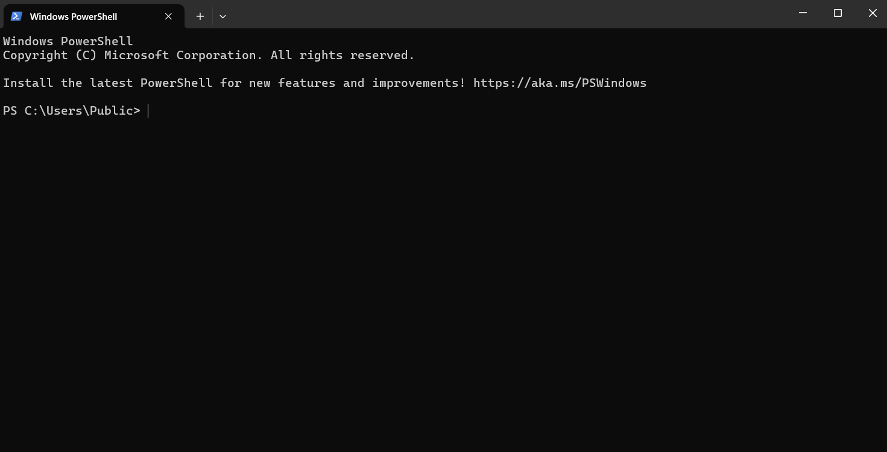
Ten najniżej wskazuje na ścieżkę, (folder) w której się obecnie znajdujesz.
Na początek wypróbujmy Pythona.
O ile został on zainstalowany poprawnie, wpisanie któregoś z poniższych poleceń i zatwierdzenie enterem powinno wyświetlić komunikat o uruchomieniu Pythona. (przetestuj wszystkie, któreś powinno zadziałać)
py
python
python3
Jeśli otrzymujesz komunikat o nierozpoznanym poleceniu albo zostajesz wysłany na stronę Pythona w sklepie - to raczej nie to.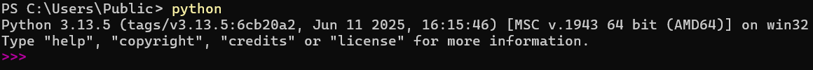
Jeśli już znalazłeś/łaś tę właściwą opcję, znajdujesz się teraz w konsoli interpretera. Niewiele się zmieniło prawda? Cóż, jeszcze jest szansa żeby wrócić do ładnego IDE... 😉
Wpisz lub przekopiuj do interpretera poniższe polecenie:
print("Hello World")
I zatwierdź klikając enter.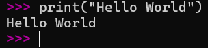
Pierwsze wykonane przez ciebie polecenie programistyczne nie jest być może zbyt spektakularne, ale to dobry początek.
Funkcja
print() wypisuje tekst to konsoli.(na razie może się to wydawać mało użyteczne, ale później okaże się przydatne)
Na razie wyjdźmy z interpretera. Możesz go opuścić, wpisując polecenie
quit() lub exit().Stwórz teraz, za pomocą swojego edytora tekstu, nowy plik o nazwie "Hello.py" i przekopiuj do niego ten sam kod:
print("Hello World")
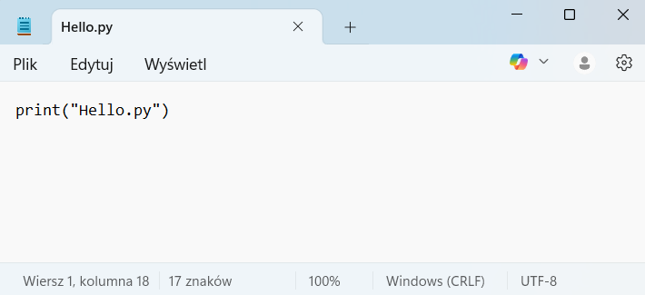
To jest Notepad. Ale nie bierz ze mnie przykładu. Na co dzień używam nano.
...Tu w sumie też nie bierz ze mnie przykładu, są wygodniejsze opcje.
Teraz za pomocą terminala spróbujemy znaleźć ten plik. Ale najpierw pozbądźmy się niepotrzebnego tekstu, który zaśmieca nam terminal.
Zrobisz to poleceniem
cls (PowerShell i cmd) lub
clear (niektóre inne terminale/powłoki, np. bash).Jak wspomniałem, napis przed polem do wpisywania poleceń wskazuje na lokalizację, w której obecnie się znajdujesz.
Lokalizację w większości terminali zmienia się poleceniem
cd (od Change Directory).
Jeśli więc na przykład stworzyłeś swój plik w folderze "Python" na dysku C, to możesz się tam dostać za pomocą polecenia:
cd C:\Python\
Jeśli nie wiesz, jaka ścieżka prowadzi do twojego pliku,
być może łatwiej będzie ci znaleźć go najpierw w swoim systemowym eksploratorze plików.Jeśli w eksploratorze wejdziesz we właściwości tego pliku, powinna się tam znajdować informacja o jego lokalizacji (zwykle: prawy przycisk myszy na pliku -> właściwości).
Upewnij się tylko, że zmieniasz lokalizację na folder, nie na plik!
Np.
cd C:\Python\ a nie C:\Python\Hello.pyInne detale nawigacji za pomocą cd (naciśnij aby rozwinąć)
Warto wiedzieć, że nie zawsze trzeba wpisywać całą ścieżkę. Jeśli np. znajdujemy się w C:\Python\,
w którym jest folder "Programy", to możemy do niego przejść za pomocą:
cd Programy lub cd ./Programy (kropka oznacza lokalizację, w której obecnie się znajdujemy).
Jeśli następnie chcielibyśmy wrócić do C:\Python, możemy skorzystać z operatora dwóch kropek:
cd ..
Symbolizują one folder nadrzędny (poprzedni).
Kiedy znajdziesz się już w docelowym folderze, być może chciałbyś/chciałabyś sprawdzić, co się w nim znajduje. Zrobisz to poleceniem
dir (PowerShell / cmd) lub ls (bash).No dobrze, a teraz uruchommy wreszcie ten program. Zrobisz to poprzez połączenie polecenia uruchamiającego Pythona oraz nazwy pliku (właściwie - poprzez przekazanie nazwy pliku Pythonowi).
py Hello.py, python3 Hello.py itp.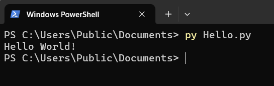
W ten sposób możesz napisać dowolny program w swoim edytorze tekstu, a następnie uruchomić go z poziomu terminala.
Na koniec możesz zamknąć terminal poleceniem
exit.Jesteś teraz gotowy/a aby przejść do lekcji numer 2: Czym są zmienne?
Do spisu treści
Jeremi Maciejewski